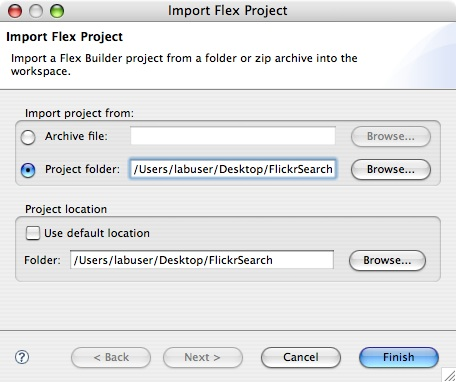
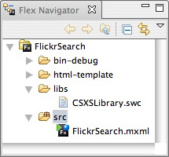

Flickr Search Panel: Create a Flickr Service
The second part of the Flickr Search Panel is programming the Adobe Photoshop Panel for a service connection using ActionScript. Since Adobe Flex Builder was previously closed, the developer will able to import Adobe Flex Builder Project if there is an empty project. The developer will program functions in ActionScript to initialize the Flickr Search Panel, to request the photographs properties from Flickr, and to handle events of whether or not the connection to Flickr has been successful. The developer will also create an HTTP Service tag connection to Flickr. The result is enabling Flickr Search Panel in Adobe Photoshop to make a service connection to Flickr to be able to retrieve the images and its properties.
Instructions:
- Open Adobe Flex Builder.
- If the FlickrSearch project fails to show up:
- Go to File > Import > Flex Project....
- Select Project and Browse... to the FlickrSearch folder on the desktop.
- Deselect Use default location.
- Press Finish. 
- Go to Flex Navigator or go to Window > Flex Navigator.
- Verify that CSXSLibrary.swc is under the libs folder. Double-click on FlickrSearch.mxml if the Design Area is empty. 
- Go to Source Mode by selecting Source under the FlickrSearch.mxml tab or go to Window > Switch Source/Design Mode. The initial code should look similar to the following:
<?xml version="1.0" encoding="utf-8"?> <mx:Application xmlns:mx="http://www.adobe.com/2006/mxml" layout="vertical"> <mx:HBox width="100%"> <mx:TextInput/> <mx:Button label="Search"/> </mx:HBox> <mx:TileList width="100%" height="100%"></mx:TileList> </mx:Application> - The red colored text are the changes made to FlickrSearch.mxml:
<?xml version="1.0" encoding="utf-8"?> <mx:Application xmlns:mx="http://www.adobe.com/2006/mxml" layout="vertical" creationComplete="init()"> <mx:Script> <![CDATA[ import mx.controls.Alert; import mx.events.FlexEvent; import mx.rpc.events.*; import mx.collections.*; [Bindable] private var photoFeed:ArrayCollection; private function init():void{ searchText.addEventListener(FlexEvent.ENTER, requestPhotos); } private function requestPhotos(event:Event):void{ flickrService.cancel(); var params:Object = new Object(); params.format = "rss_200_enc"; params.tags = searchText.text; flickrService.send(params); } private function photoHandler(event:ResultEvent):void{ photoFeed = event.result.rss.channel.item as ArrayCollection; } private function faultHandler(event:FaultEvent):void{ Alert.show("Not able to load photos from services","Error"); } ]]> </mx:Script> <mx:HTTPService id="flickrService" showBusyCursor="true" url="http://api.flickr.com/services/feeds/photos_public.gne" result="photoHandler(event)" fault="faultHandler(event)"/> <mx:HBox width="100%"> <mx:TextInput id="searchText"/> <mx:Button label="Search" click="requestPhotos(event)"/> </mx:HBox> <mx:TileList width="100%" height="100%"></mx:TileList> </mx:Application>
Code Walkthrough: The
creationCompleteparameter insidemx:Applicationtag is like a constructor in Object-Oriented Programming. The functioninitis called bycreationCompleteto initialize thesearchTextevent handler to detect the keyboard'sENTER. The functionrequestPhotossets up the parameters to send the user's input tags to request the photograph's information. The functionphotoHandlerandfaultHandlerboth handles theHTTPServiceconnection to Flickr to respectively retrieve the photograph's information into anArrayCollectionor alert the user that a problem has occurred. TheHTTPServicetag sets up a connection with Flickr with specified parameters such as the unique identifierid, theurl, and the event handlers,resultandfault. Inside theHBoxtag, theTextInputtag is uniquely identified byidand theButtontag has aclickevent handler to call the functionrequestPhotos.